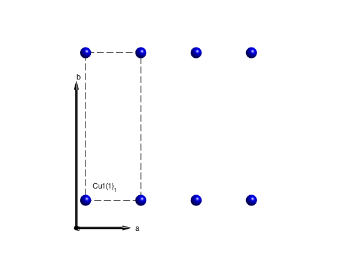
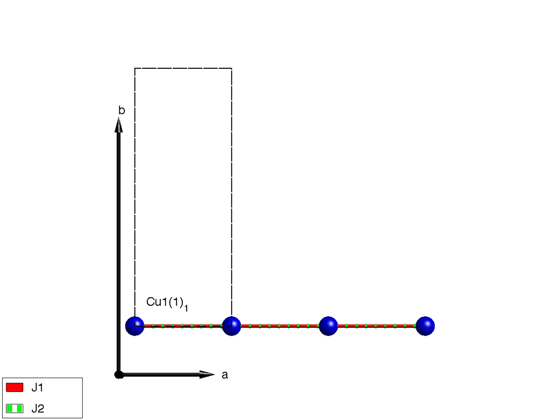
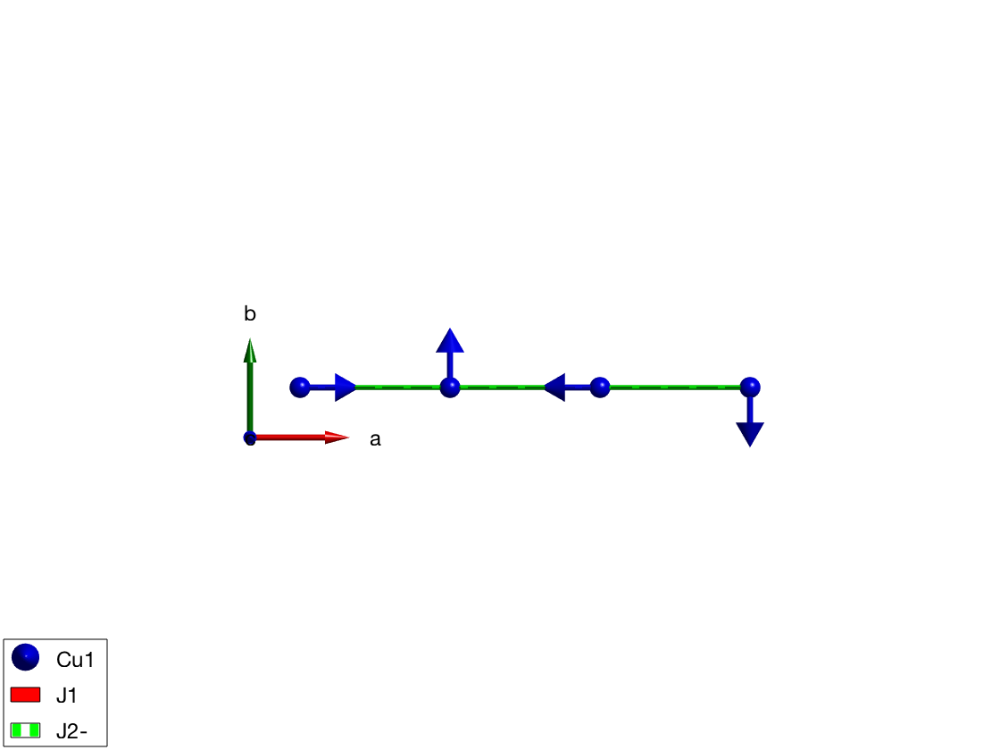
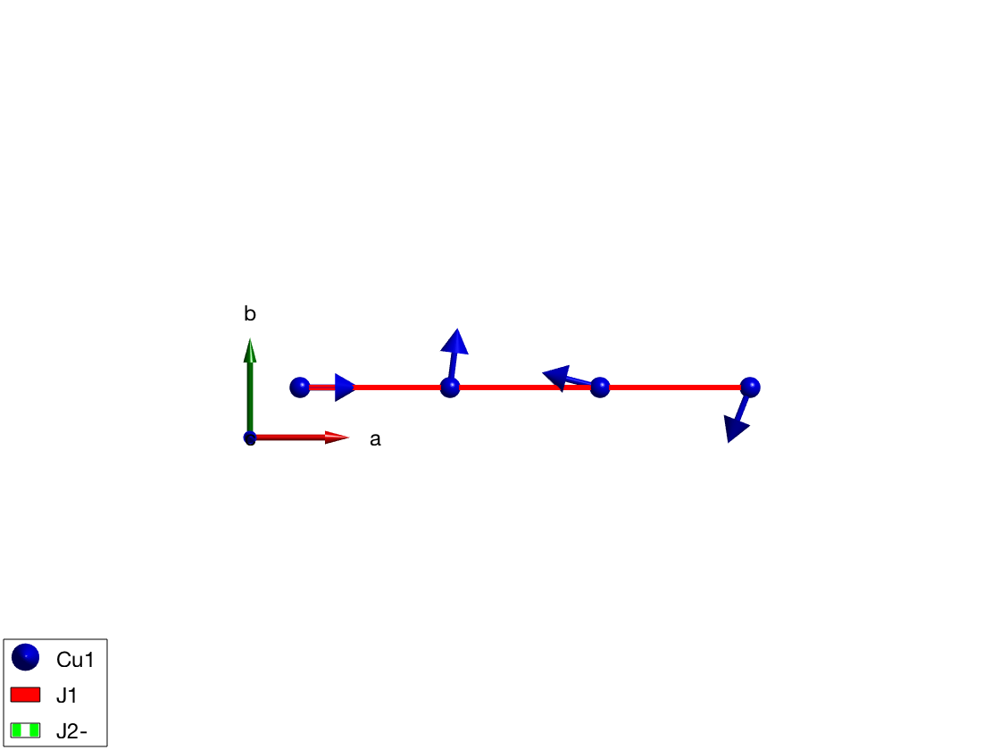

Contents
Frustrated J1-J2 AFM chain
Crystal structure, shortest bond along a-axis, Cu+ magnetic atoms with S=1 spin.
J1J2chain = spinw; J1J2chain.genlattice('lat_const',[3 8 10],'angled',[90 90 90],'sym',0); J1J2chain.addatom('r',[0 0 0],'S',1,'label','Cu1','color','blue'); display('Atomic positions as columns:') J1J2chain.atom.r plot(J1J2chain,'range',[3 1 1],'zoom',0.5)
Atomic positions as columns:
ans =
0
0
0
 Couplings
First and second neighbor antiferromagnetic couplings. If the name of the matrix ends with '-' the bond is plotted with dashed line.
J1J2chain.gencoupling('maxDistance',7); display('Rows: dlx, dly, dlz, at1, at2, idx, ma1, ma2, ma3') J1J2chain.couplingtable.table J1J2chain.coupling display('Bond vectors (first three rows) and bond distances') J1J2chain.couplingtable.bondv J1J2chain.addmatrix('label','J1', 'value',-1,'color','r'); J1J2chain.addmatrix('label','J2-','value', 2,'color','g'); J1J2chain.addcoupling('mat','J1','bond',1); J1J2chain.addcoupling('mat','J2-','bond',2); plot(J1J2chain,'range',[3 0.9 0.9],'zoom',0.8)
Creating the bond list (maxDistance = 7 Å, nCell = 3x1x1) ...
... 2 bonds are retained out of 36 generated!
Rows: dlx, dly, dlz, at1, at2, idx, ma1, ma2, ma3
ans =
1 2
0 0
0 0
1 1
1 1
1 2
0 0
0 0
0 0
ans =
dl: [3x2 int32]
atom1: [1 1]
atom2: [1 1]
idx: [1 2]
mat_idx: [3x2 int32]
type: [3x2 int32]
rdip: 0
Bond vectors (first three rows) and bond distances
ans =
1 2
0 0
0 0
3 6
 Magnetic structure is a helix
We use two different methods to define the ground state magnetic structure:
Direct input
If we would know the exact solution of the spin Hamiltonian we can input that, assuming a helix with the following parameters:
- magnetic ordering wave vector k = (1/4 0 0)
- spins lying in arbitrary plane, first spin S = (1 0 0)
- normal to the plane of the spin helix has to be perpendicular to S, we choose it n = (0 0 1)
- we won't use a magnetic supercell, not necessary
J1J2chain.genmagstr('mode','helical', 'k',[0.25 0 0], 'n',[0 0 1], 'S',[1; 0; 0], 'nExt',[1 1 1]) display('Magnetic structure with spins 1 2 ... as columns, xyz as rows:') J1J2chain.mag_str J1J2chain.mag_str.S display('Ground state energy before optimization (meV/spin)') J1J2chain.energy plot(J1J2chain,'range',[3 0.9 0.9])
We optimise the helix pitch angle
We are unsure about the right pitch angle of the helix, thus we want to calculate it. The sw.optmagstr() is able to determine the magnetic ground state. It uses a constraint function (@gm_planar in this case) to reduce the number of paramteres that has to be optimised. It works well if the number of free parameters are low. we will find the the right k-vector is 0.2301.
% Phi1 k_x k_y k_z nTheta nPhi x1 = [0 0 0 0 0 0]; x2 = [0 1/2 0 0 0 0]; optRes = J1J2chain.optmagstr('func',@gm_planar,'xmin',x1,'xmax',x2,'nRun',10); display('Ground state energy after optimization (meV/spin)') J1J2chain.energy display('Optimized magnetic structure with spins as columns, xyz as rows:') J1J2chain.mag_str J1J2chain.mag_str.S plot(J1J2chain,'range',[3 0.9 0.9])
Magnetic structure with spins 1 2 ... as columns, xyz as rows:
ans =
N_ext: [1 1 1]
k: [0.2500 0 0]
S: [3x1 double]
n: [0 0 1]
ans =
1
0
0
Ground state energy before optimization (meV/spin)
ans =
-2
Finished in 00:00:00 (hh:mm:ss).
Ground state energy after optimization (meV/spin)
ans =
-2.0625
Optimized magnetic structure with spins as columns, xyz as rows:
ans =
N_ext: [1 1 1]
k: [0.2301 0 0]
S: [3x1 double]
n: [0 0 1]
ans =
1
0
0
 Spin wave spectrum
We calculate the spin wave spectrum, the code automatically uses the method that enables the spin wave calculation of incommensurate structures withouth creating a magnetic supercell. There are three spin wave modes, these are omega(Q), omega(Q+/-k). The two shifted ones are due to the incommensurate structure.
J1J2spec= J1J2chain.spinwave({[0 0 0] [1 0 0] 400}, 'hermit',false);
J1J2spec = sw_neutron(J1J2spec);
J1J2spec = sw_egrid(J1J2spec, 'Evect',linspace(0,6.5,100));
sw_plotspec(J1J2spec, 'mode',1,'colorbar',false)
axis([0 1 0 6])
Calculating INCOMMENSURATE spin wave spectra (nMagExt = 1, nHkl = 1200, nTwin = 1)...
No magnetic form factor is included in the spin-spin correlation function.
No g-tensor is included in the spin-spin correlation function.
Warning: Eigenvectors of defective eigenvalues cannot be orthogonalised!
Warning: Eigenvectors of defectivFinished in 00:00:00 (hh:mm:ss).
 Written by Bjorn Fak & Sandor Toth 06-June-2014